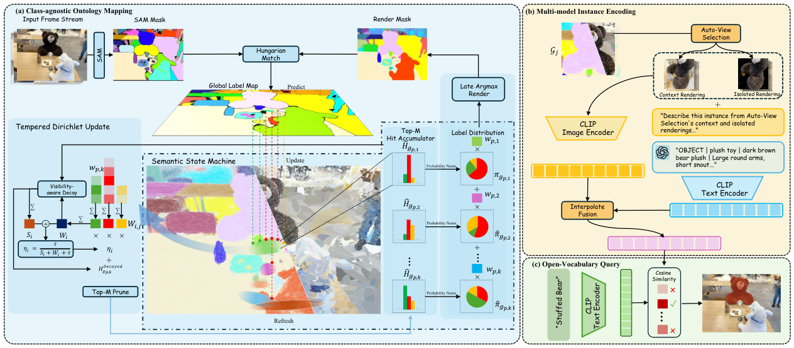

Paper Analysis
01 · Why a Boundary Gaussian Should Not Decide Too Early
一个高斯的投影可能同时覆盖相邻实例；跨视角 SAM mask 也可能分裂或合并。如果每次只存最高票 ID，次高票信息立即消失，后续渲染和匹配会继续强化早期决定。DIGS 因此研究的是实例证据的存储方式，而不是给每个高斯多加一个类别颜色。
它先使用训练 30,000 次迭代的 Mip-Splatting 重建，之后固定位置、协方差、不透明度和颜色。语义流水线无梯度，不能把 training-free 理解为从原始 RGB 到完整地图全程不训练。
需要区分三种量：实例 ID 是跨帧注册的编号；标签分布保存对若干实例的支持；CLIP 向量用于把实例与文本联系起来。实例 ID 不是类别名，标签分布也不是语言向量。
Paper Analysis
02 · Following the Original Figure

Zhifan Zeng, Wenbo Xiao, Arcot Sowmya, and Changming Sun · CC BY 4.0 · Original figure, unmodified · Paper & Caption ↗
图 2(a) 先从当前相机位姿渲染已有实例标签，再把当前 SAM masks 与预测区域通过 IoU 和 Hungarian 分配关联。未匹配区域分配新 ID；遮挡造成多个碎片时允许贪心回退到同一历史 ID。这一环节主要依靠投影重叠，并非用 CLIP 把同类物体直接合并。
渲染器给每个像素输出 top-K 贡献高斯及 alpha 合成权重。当前全局 ID 图沿这些权重投回高斯，更新证据 H。每次只保留 top-M 个非零标签支持，默认 M=3；K 是像素贡献者数，M 是高斯的标签支持数，二者不能混淆。
图右侧将每个高斯的分布投到像素，先加权求和再 argmax，得到下一帧关联所用的预测图，形成闭环。实例层另有 match/miss 生命周期，优先回收长时间缺失的 zombie 槽位。ID 注册表有容量上限，不是无限增加对象目录。
图 2(b–c) 在建图完成后，给稳定实例选择投影面积大的训练视角，得到上下文图与仅该实例的渲染图。CLIP 编码隔离的实例外观；GPT-4.1 生成属性描述，再由 CLIP 文本编码器编码。查询用融合后的实例向量匹配文本，返回实例范围。VLM 没有在这一步修正高斯几何或反向训练 memory。
Paper Analysis
03 · A Bounded Write Is Not a Convergence Guarantee
令 H_i,j 是高斯 i 对实例 j 的历史证据；W_i,j 是当前帧带标签像素贡献给它的渲染权重和。S_i 是更新前的历史总量，W_i 是当前帧总量。更新率 η=τ/(S_i+W_i+τ) 同时抑制单帧过大的贡献和已有大量历史后的剧烈变化。
每帧注入总量 ηW_i 严格小于 τ，因为分母比 W_i 大。这是直接代数性质，对错误关联也成立，因此它并不能保证 ID 正确、错误最终纠正，或闭环收敛。
教学算例：τ=5，历史证据为 (6,4)，当前票为 (0,100)。暂不考虑衰减时，η=5/115，更新后约为 (6,8.35)。若直接累加会得到 (6,104)；限幅让新证据能够改写结果，却不允许这一帧立即淹没全部历史。
实际先对充分可见高斯做 γ=0.95 的衰减，再计算更新率；遮挡或视野外高斯不随时间无条件遗忘。随后 top-M 裁剪会丢弃落选标签证据。因此实际归一化状态不是严格 Dirichlet 后验，top-1/top-2 间隔也不是校准不确定性。
附录进一步说明：若低于可见性阈值的小正票持续输入，它们可能不触发衰减，累计证据不一定全局有界。单次写入有界、数值总量有界、存储容量有界是不同命题。
W_i,j = sum_{p assigned to j} w_p,i
S_i = sum_j H_i,j ; W_i = sum_j W_i,j
eta_i = tau / (S_i + W_i + tau)
H_i,j ← H_i,j + eta_i W_i,j
0 ≤ eta_i W_i < tauPaper Analysis
04 · Why Late-Argmax Changes the Pixel Decision
归一化 top-M 证据得到 π_i(j)。hard-label 渲染先把每个高斯变为 one-hot ID，再做像素投票；late-argmax 则保留相对支持，等所有贡献者合成后才输出标签。这样边界高斯不会把一整份不确定贡献强行交给某个实例。
教学算例：两个高斯的像素权重为 0.6 与 0.4，标签 A/B 分布分别为 (0.51,0.49) 与 (0,1)。先硬化会投出 A=0.6、B=0.4，选 A；保留分布得到 A=0.306、B=0.694，选 B。改变来自被保留的歧义信息，不是平滑物体几何。
需要保留一个实现区别：论文附录 B.2 明确说 scatter 更新使用密集 N×J 张量，只是在更新后保留 M 个非零项。因此 M=3 限制的是证据支持，而非已经实现 O(NM) 的分配内存。若迁移到严格预算系统，必须测实际分配和更新工作区。
pi_i(j) = H_i,j / sum_{r in TopM(i)} H_i,r
score_p(j) = sum_{k=1..K} w_p,k pi_{g_p,k}(j)
label(p) = argmax_{j>0} score_p(j)
All scores zero → backgroundPaper Analysis
05 · Language Enters After the Instance Map
对每个稳定实例，取多个视角的隔离渲染裁剪，平均 CLIP 图像特征后归一化为 e_vis。隔离渲染可以减少旁边物体混入，但实例 footprint 本身由 hard top-1 高斯集合定义；它与用于像素分割的 top-M 状态并不完全相同。
VLM 接收成对上下文/隔离视图，输出类别、身份和可见细节等描述。描述缓存后经 CLIP 文本编码得到 e_txt，默认以 0.7 e_vis + 0.3 e_txt 做融合，再以余弦相似度查询。文本强调属性差异，视觉保留外观证据；描述错误仍可能改变检索。
这里还存在另一条 detection-bridging 查询路径：有测试 RGB 时，用 GroundingDINO 定位文本目标，SAM 产生二维 mask，再与渲染的实例区域按 IoU 对应。它依赖测试图像，不能与只输入文本、仅查询既有三维资产的结果混为一谈。
官方仓库已发布 semantic、scene 和 rasterizer 等代码目录；本次核对公开 README 与论文实现说明，未执行 CUDA 复现。本文的数值均是作者报告，不是本地测量。
Paper Analysis
06 · Read the Numbers Together with Their Protocols
LERF-OVS 使用 OpenGaussian 的 3D-native 协议，四个场景中 CLIP-only 为 66.85% mIoU，LLM+CLIP 为 71.95%。作者复现的 SFS 为 62.16%，原论文报告值为 65.10%；LaGa 对应 60.55% 与 64.00%。引用差值时必须说明取哪一行。
组件表中，基础版本 51.98，加入稳定性筛选 58.01，再加入分布保留设计 66.85，最后加入 LLM 71.95。这是逐步消融，不能把整个 8.84 点增益全解释为单个 top-M 参数。单独 M=1 到 M=3 的扫参为 61.39 到 66.85。
LERF-Mask 的 91.71% mIoU / 86.91% mBIoU，以及 3D-OVS 的 96.45%，使用 detection-bridging。Replica 又有两套协议：Gaga 协议输入 SAM masks，IoU 51.39%；ObjectGS 协议输入真值 masks，IoU 91.46%。这些绝对值不在同一个任务难度或输入条件下。
附录的检索细节也重要：λ=0.7 不加检索过滤时为 64.34%，部署的绝对相似度与 top-1/top-2 间隔过滤对应 71.95%。作者将提升联系到拒绝脆弱匹配；但若正样本查询仍全部计分，拒绝本身不会把一个正 IoU 提高。因此复现需要逐查询核查拒绝、回退与均值分母，不能只把 71.95 归因于更好的嵌入。这里保留作者数字，未把这一实现细节视为已解决。
| Evaluation | Input / Query | Reported Result | Scope |
|---|---|---|---|
| LERF-OVS | 3D-native, CLIP only | 66.85% mIoU | 实例语言检索 |
| LERF-OVS | 3D-native, LLM+CLIP | 71.95% mIoU | 包含部署检索过滤 |
| LERF-Mask | Test RGB + detection bridge | 91.71% mIoU | 额外二维检测输入 |
| Replica / Gaga | SAM masks | 51.39% IoU | 类无关实例协议 |
| Replica / ObjectGS | GT masks | 91.46% IoU | 真值二维监督协议 |
Paper Analysis
07 · Cost, Failure Modes, and Memory Lessons
LERF-OVS 单 A100 的语义 mapping 为 0.91 分钟，CLIP 编码再加 0.09 分钟，LLM 描述再加约 2.2 分钟，主要是 API I/O。建图瞬时显存 12.4 GB，查询稳态 5.4 GB；3D-only 查询 5.4 ms，文本到二维 mask 为 28.1 ms。这些不是包含预先 30,000 次几何优化的端到端时间。
透明表面会让 alpha 权重穿到背景高斯，前景 mask 的票随之写到背景，造成实例范围泄漏。SAM 若只给整个物体，查询帽子、标志等部件时没有独立槽位，再好的文本描述也不能凭空创造对应几何分区。
和 OV-Foam 对照，后者通过改变基元支持研究表示混合，DIGS 则固定几何，在语义状态中保留多个实例假设。两者都提醒我们：先分清错误来自二维语义、跨视角关联、表示混合，还是读取决策。
对 LingBot-Map 的个人启发是让写入具有可修订性：语义不可靠时避免把历史过早压为唯一归属，并保留几何证据来纠正它。但这里的显式高斯–实例票表不是 Transformer KV，不能把公式直接套到六个特殊 token 上。若仍采用写入前融合，应单独比较硬标签与软语义特征，并用后续几何损失检验是否真正获益。DIGS 本身不提供语义改善几何的实验。
Discussion
Reading Questions
Is the stored distribution an exact Bayesian posterior?
不是。论文用 Dirichlet 模型解释更新，但可见性衰减、连续渲染票和 top-M 裁剪改变了标准后验，作者附录明确限定了这一点。
Does a bounded update prevent wrong associations?
不能。错误票同样满足限幅，只是单帧不容易压倒历史。关联正确性与闭环收敛需要额外证据。
Does top-M imply sparse allocated memory?
不一定。这里公开论文说明实际 scatter 使用 N×J 密集张量；M 约束非零支持。必须另看实现内存。
Does the VLM supervise geometry or memory formation?
没有。该方法在固定几何和实例映射之后生成描述，用于实例检索；不是 VLM loss 回传重建主干。
References
- Paper and Version ↗
- Official Repository ↗
- Related Note: OV-Foam ↗
- Related Note: Target-Aware Refinement ↗
One original figure is reproduced for method analysis. Dates refer to the first arXiv submission; numerical results refer to the stated reading version.
Verified on 2026-10-30. Paper results refer to the linked versions. Repository references were checked on this date.